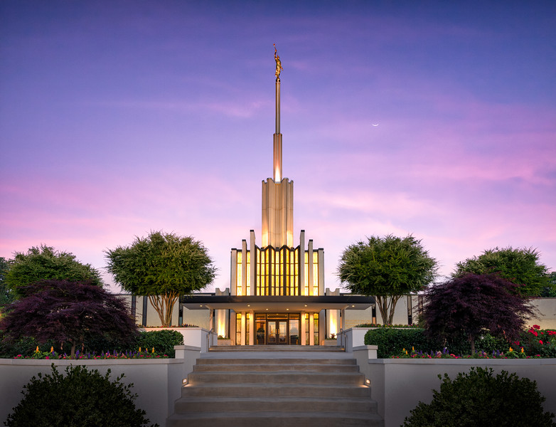

Atlanta, Georgia Temple
Address:
Telephone:
Services:
History:
The Atlanta Georgia Temple was the first temple dedicated by President Gordon B. Hinckley, who went on to dedicate or rededicate 89 other temples.
The Atlanta Georgia Temple was originally named the Atlanta Temple.
On March 7, 1981, nearly 10,000 members crowded on the site of the Atlanta Georgia Temple to witness the first ceremonial shovelfuls of dirt at the groundbreaking ceremony.
The originally proposed design for the Atlanta Georgia Temple fell short of "Mormon Temple" status in the eyes of a Faith & Values reviewer for the Atlanta Journal-Constitution, who noted the absence of a spire and gold angel. A short time later, on January 10, 1982, church architect Emil B. Fetzer announced revised plans for the temple, which commenced a tradition of including a spire and angel Moroni on nearly every successive Latter-day Saint temple.
In May 1983, over 60,000 people toured the Atlanta Georgia Temple during its nearly three-week public open house. The first day of the open house was reserved for VIP guests including various local leaders and baseball legend Dale Murphy of the Atlanta Braves—himself a member of the Church.
At the dedication of the Atlanta Georgia Temple, President Hinckley promised that the baptistry would one day be enlarged. That promise was fulfilled 14 years later when a renovation project enlarged the baptistry, added offices, and remodeled the waiting rooms. President Hinckley himself returned to the temple to dedicate the baptistry addition.
The angel Moroni statue that originally stood atop the Atlanta Georgia Temple, which has now been replaced, was a casting made by LaVar Wallgren of the statue created by Torlief Knaphus for the Washington D.C. Ward chapel, which he made as a replica of Cyrus E. Dallin's statue atop the Salt Lake Temple. (Other castings of this statue stand atop the Idaho Falls Idaho Temple and the Boston Massachusetts Temple.)
The Atlanta Georgia Temple closed for nearly two years beginning July 1, 2009, for a complete remodel of the interior, renovation of the exterior, and relandscaping of the grounds. The interior was reconfigured to feature high ceilings in the foyer, a nonpatron waiting room, a high-capacity sealing room, progressive ordinance rooms with murals, and art glass illuminated with daylight-style lighting in the Celestial Room. Clothing rental was removed, and food vending was relocated.
The crystal from the original Celestial Room chandelier of the Atlanta Georgia Temple was crushed and incorporated into the Celestial Room art glass windows of the remodeled temple. Marble from the original altars was laid into the pulpit of the chapel.
Ordinance Schedule:
Session Schedule:
Closure Schedule:
Weather in Atlanta
In the next five days
- Day 1
- Day 2
- Day 3
- Day 4
- Day 5